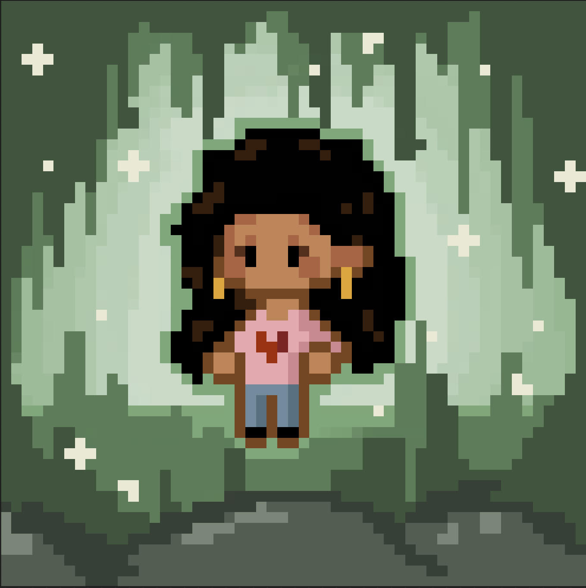

Welcome to my personal website!

Hi! I'm so glad you are here! My name is Anushka Dingare, and I am a high school student with a passion for coding, biology, research, and engineering. I love talking about books, video games, and debate. I teach free debate classes at NovaDebate, and I teach public speaking classes through AMPlify, a local student organization. I love learning new things and would love to connect to talk books, robotics, debate, art, etc. This is my first ever website, and I am so excited to share it with you!
This section will be updated with my crochet projects soon.